Auf Rezept
Physiotherapie auf Rezept in Ispringen
Nach einem Unfall, einer Operation, mit einer neuen Diagnose oder nach einer falschen Bewegung: Diese Behandlungen verordnet Ihre Ärztin oder Ihr Arzt. Wir behandeln den betroffenen Bereich, arbeiten an Schmerz und Beweglichkeit und zeigen Ihnen und Ihren Angehörigen Übungen für zu Hause.
Bezahlung: Gesetzlich Versicherte zahlen nur die gesetzliche Zuzahlung. Privat Versicherte erhalten eine Rechnung.
-
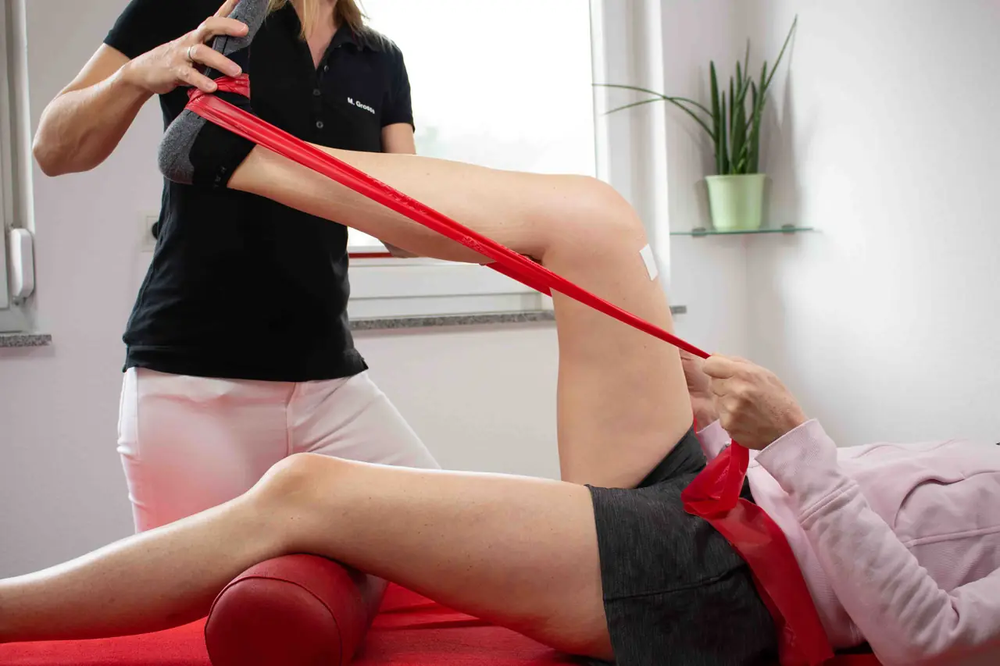
Krankengymnastik Zurück auf Anfang Krankengymnastik (Physiotherapie) bei Schmerzen, Bewegungseinschränkungen, nach Unfällen und Operationen. -
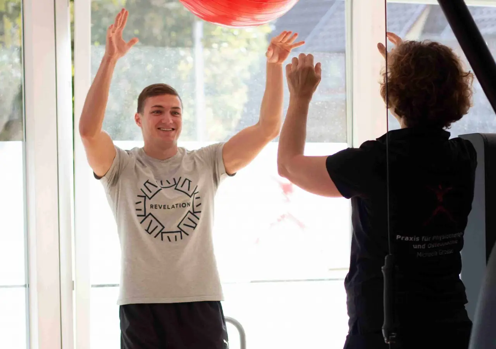
Sportphysiotherapie Nach dem Spiel ist vor dem Spiel Sportphysiotherapie für Hobby- und Leistungssportler nach Verletzung oder Überlastung. -
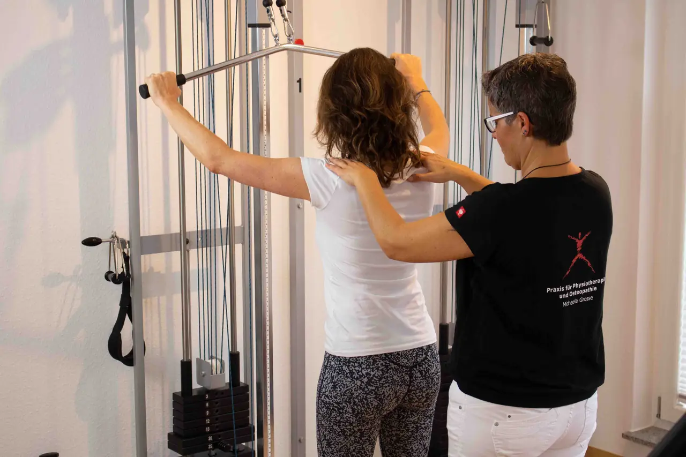
Medizinische Trainingstherapie (KGG) Fit werden – aber richtig Medizinische Trainingstherapie und Krankengymnastik am Gerät (KGG) in kleinen Gruppen. -
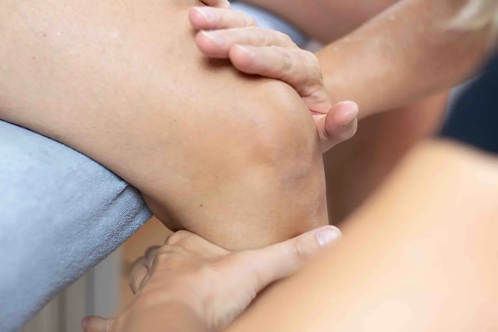
Manuelle Therapie Alles in Bewegung Manuelle Therapie bei Gelenkblockaden, Arthrose, Hexenschuss und nach Operationen. -
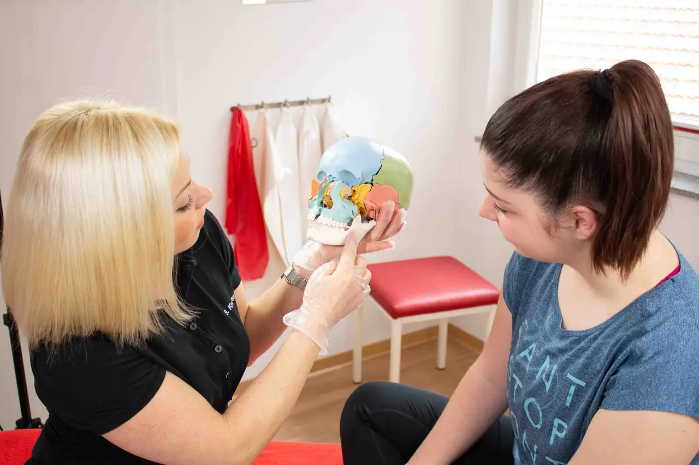
Kiefergelenkstherapie (CMD) Beißen Sie nicht die Zähne zusammen! Physiotherapie bei CMD und Kieferbeschwerden – auf Verordnung von Zahnarzt oder Kieferorthopäde. -
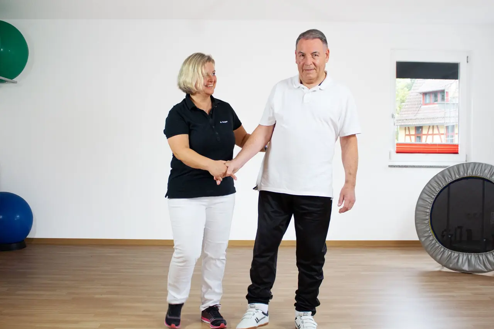
Bobath-Therapie für Erwachsene Zurück in den Alltag Bobath-Therapie nach Schlaganfall, Schädel-Hirn-Trauma, bei Multipler Sklerose oder Parkinson. -
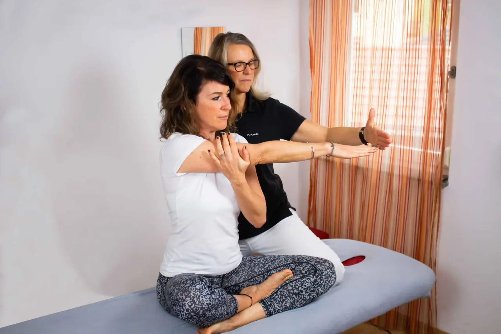
Schwindel- und Vestibulartherapie Stoppen Sie den Drehwurm Vestibuläre Rehabilitation bei Lagerungsschwindel, vestibulärer Migräne und anderen Schwindelformen. -
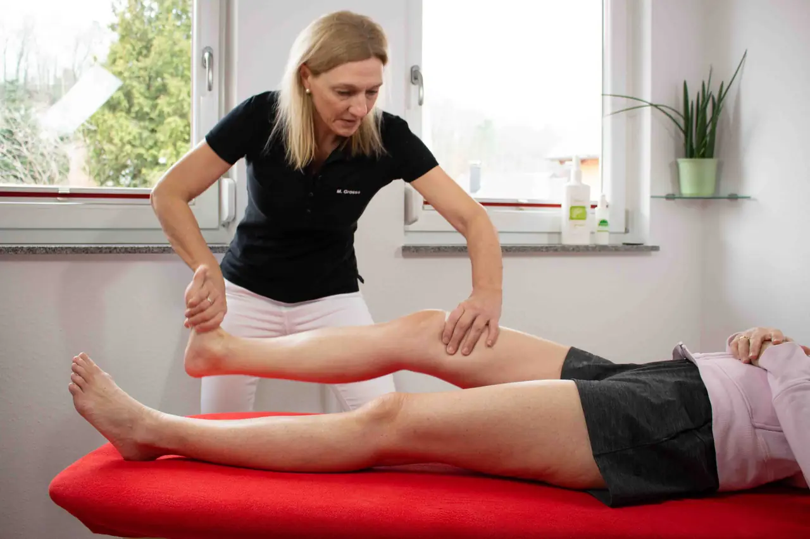
Neurophysiologische Behandlung (PNF) Treffen Sie einen Nerv PNF – Propriozeptive Neuromuskuläre Fazilitation – nach Unfall, Bandscheibenvorfall oder Schlaganfall. -
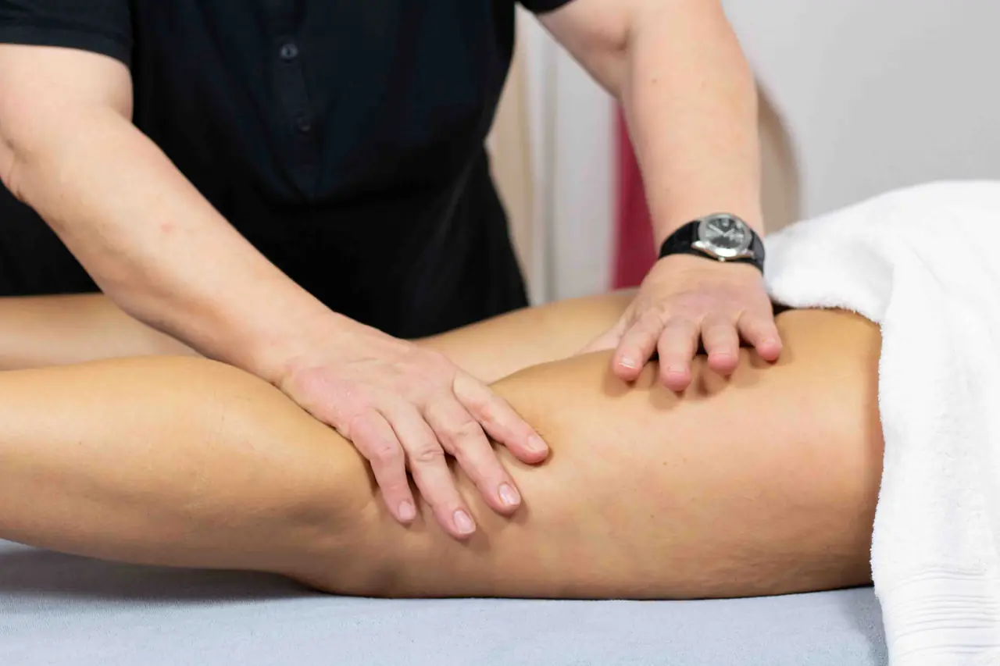
Manuelle Lymphdrainage Alles im Fluss Manuelle Lymphdrainage bei Lymphödemen, nach Operationen und Verletzungen – auch mit Kompressionsbandage. -
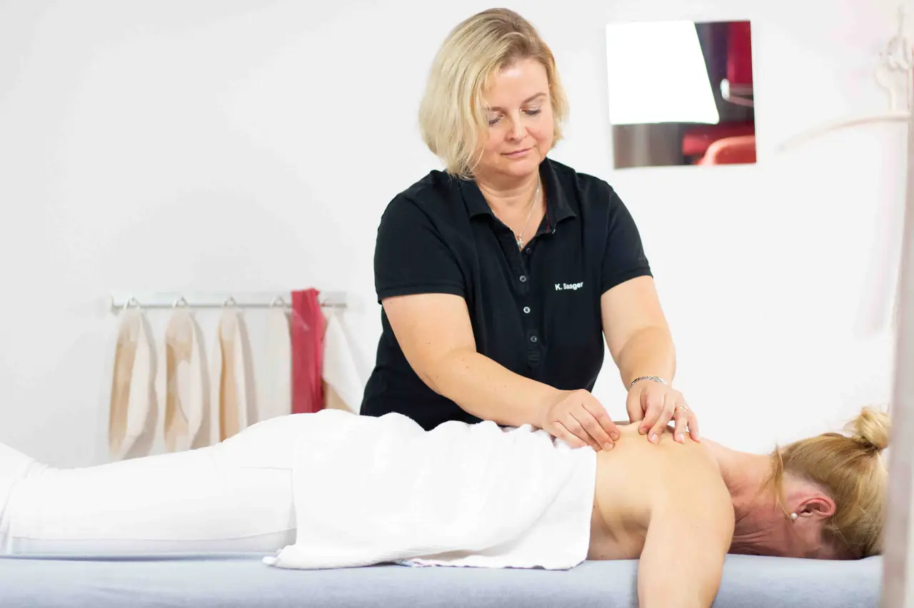
Medizinische Massage Entspannung auf Rezept Klassische Massagetherapie (KMT) auf ärztliche Verordnung bei Verspannungen und Verhärtungen. -
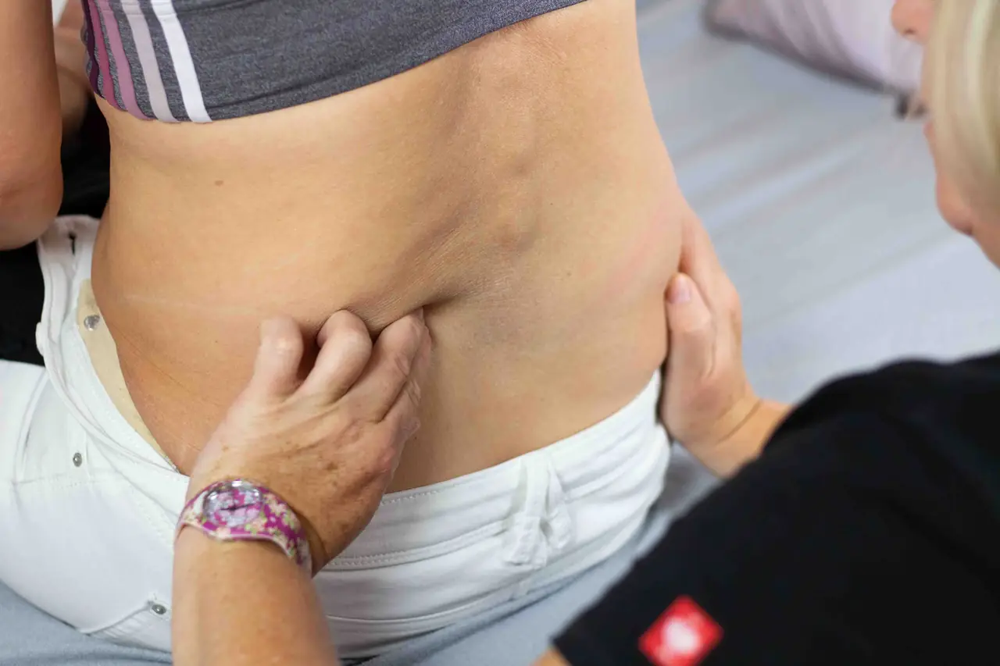
Bindegewebsmassage Vom „Au“ zum „Ahhhh“ Bindegewebsmassage (Faszienmassage) – auch zur Narbenbehandlung. -
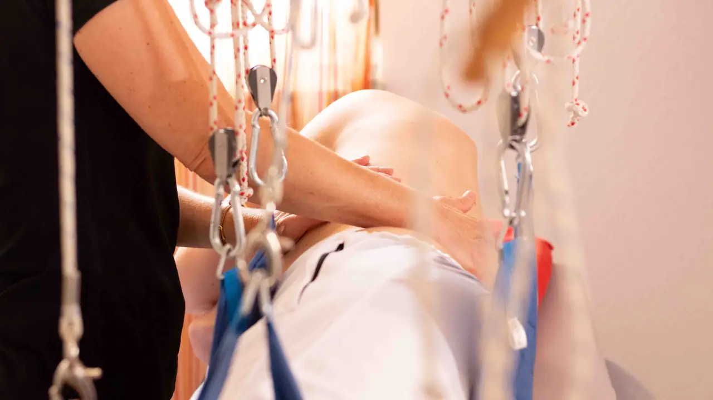
Schlingentisch Einfach mal abheben Schlingentisch-Behandlung zur Entlastung von Wirbelsäule und Gelenken. -
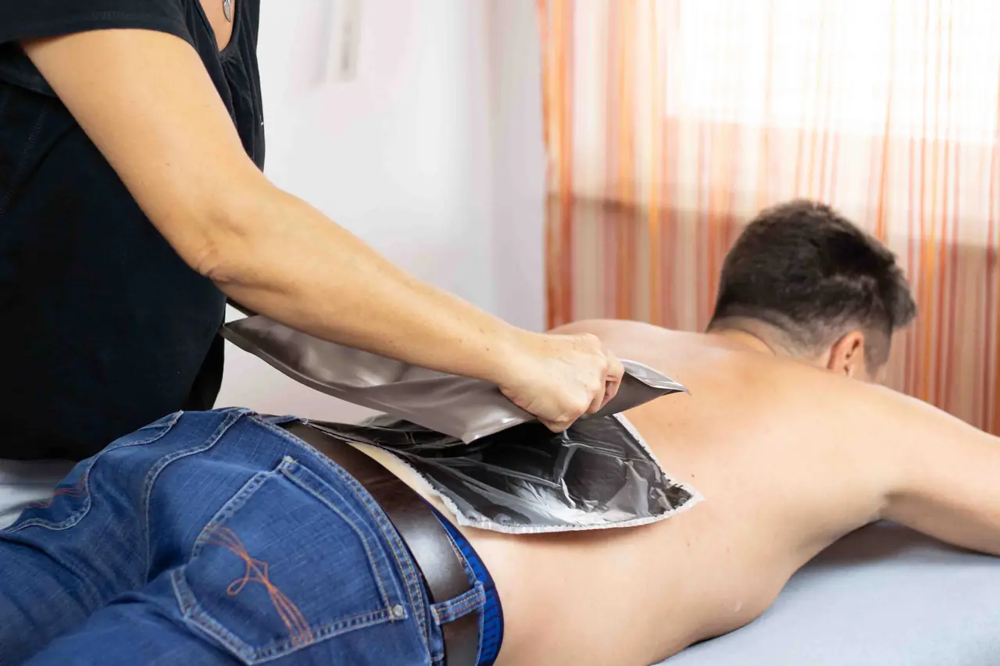
Wärmetherapie mit Fango Wärme für Körper und Seele Fango-Wärmeanwendung – meist ergänzend zu Krankengymnastik oder Massage verordnet. -
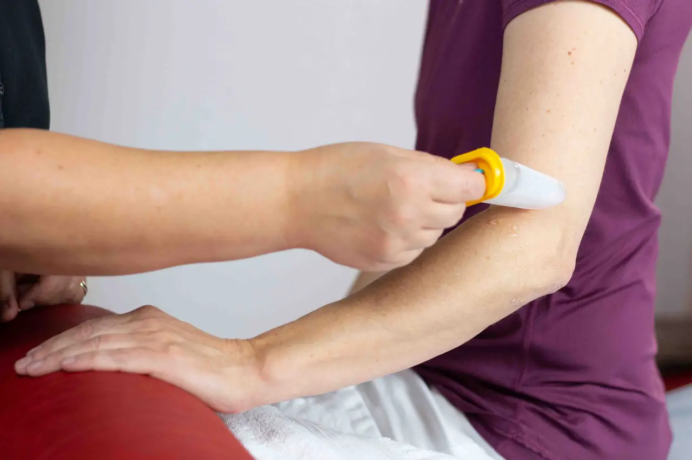
Kryotherapie (Eistherapie) Kälte verschafft Linderung Eistherapie bei lokalen Entzündungen, Schwellungen und akuten Sportverletzungen. -
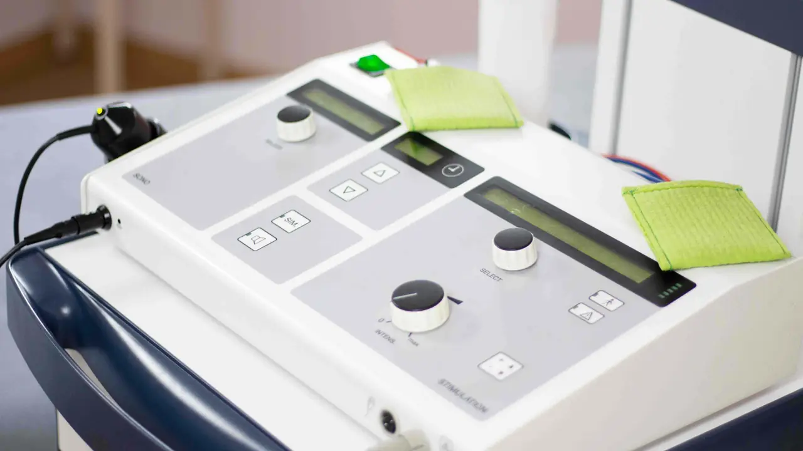
Elektrotherapie Elektrisierende Behandlung Elektrotherapie zur Schmerzbehandlung, Durchblutungsförderung und Muskelaktivierung – auch Iontophorese. -
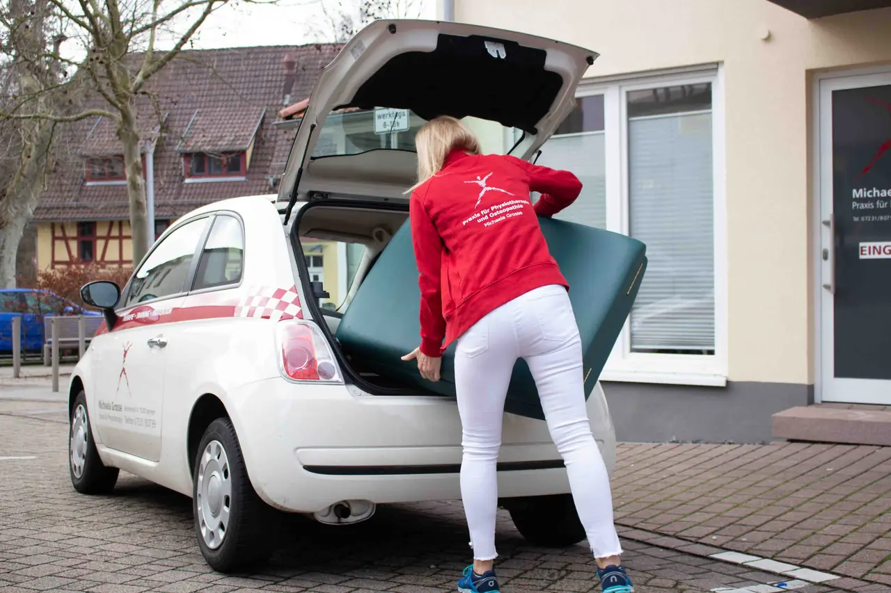
Hausbesuche Therapie bei Ihnen zu Hause Physiotherapie als Hausbesuch in Ispringen und Umgebung – auch in Alten- und Pflegeheimen.
Fragen zum Rezept
Brauche ich ein Rezept?
Für Physiotherapie über die Krankenkasse brauchen Sie eine ärztliche Heilmittelverordnung, bei Kieferbeschwerden auch von Zahnarzt oder Kieferorthopädin. Massagen, Osteopathie, Kinesio-Tape, Kurse und Training können Sie ohne Rezept buchen.
Wie schnell muss ich nach Erhalt des Rezepts beginnen?
Die erste Behandlung muss in der Regel innerhalb von 28 Tagen nach dem Ausstellungsdatum stattfinden. Ist auf der Verordnung „dringlicher Behandlungsbedarf“ angekreuzt, innerhalb von 14 Tagen. Rufen Sie deshalb möglichst bald nach dem Arztbesuch an.
Was kostet mich die Behandlung mit Rezept?
Gesetzlich Versicherte ab 18 Jahren zahlen 10 € pro Verordnung plus 10 % der Behandlungskosten. Kinder und Jugendliche sind befreit, ebenso Erwachsene mit Befreiungsbescheinigung der Krankenkasse. Privat Versicherte erhalten eine Rechnung, die Erstattung richtet sich nach ihrem Tarif.